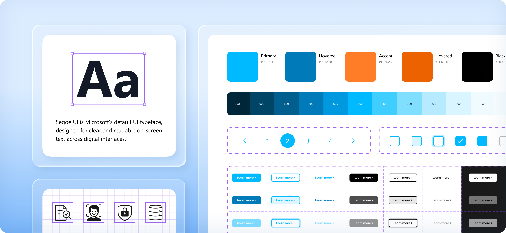
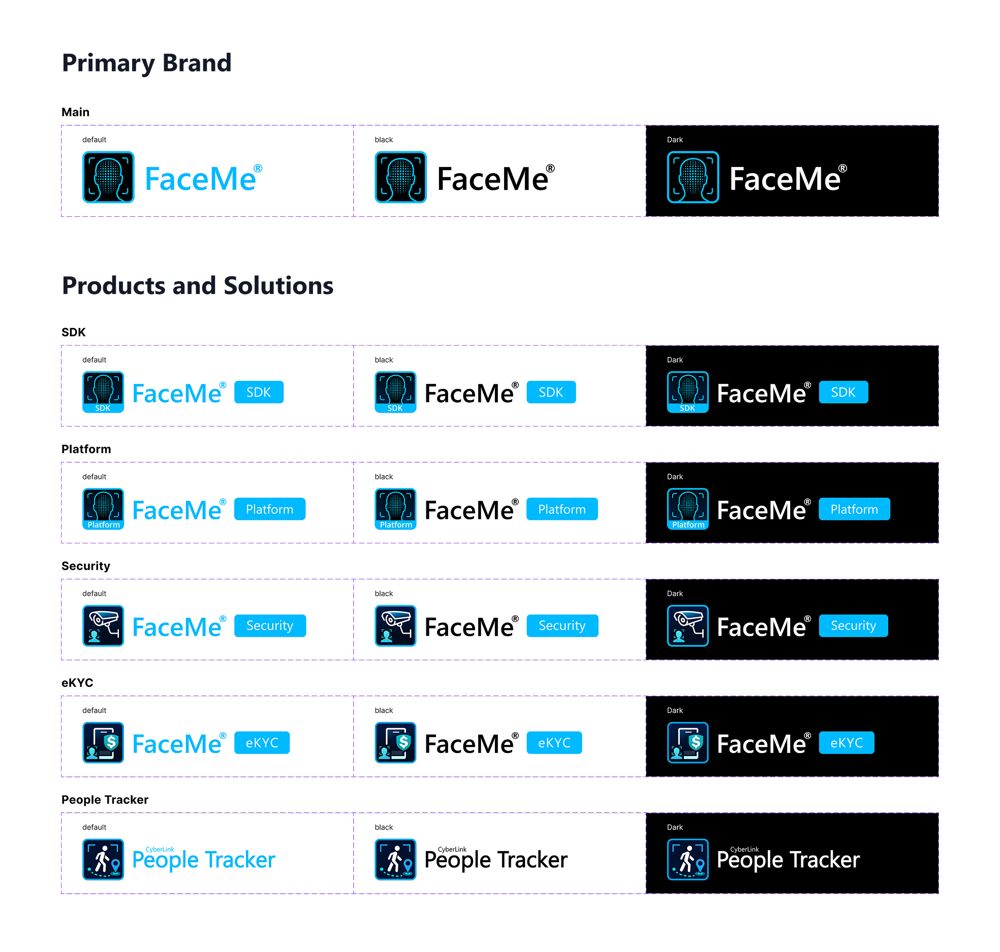
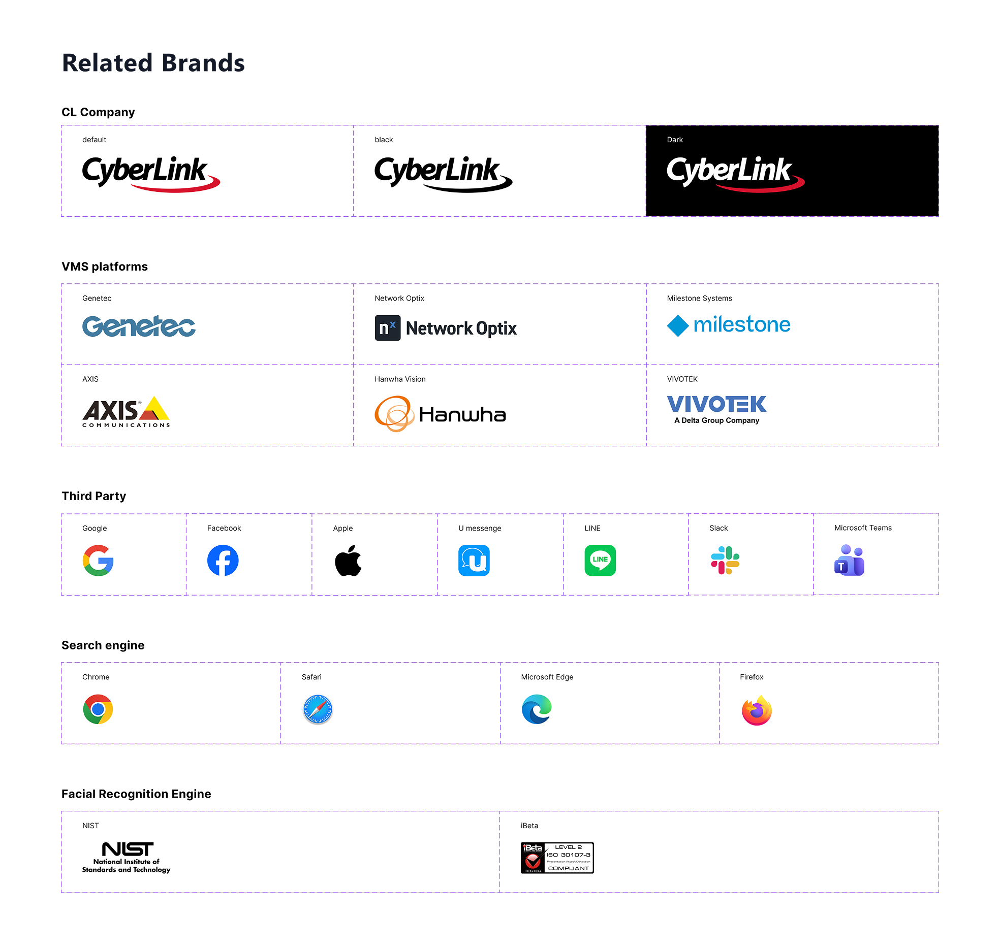
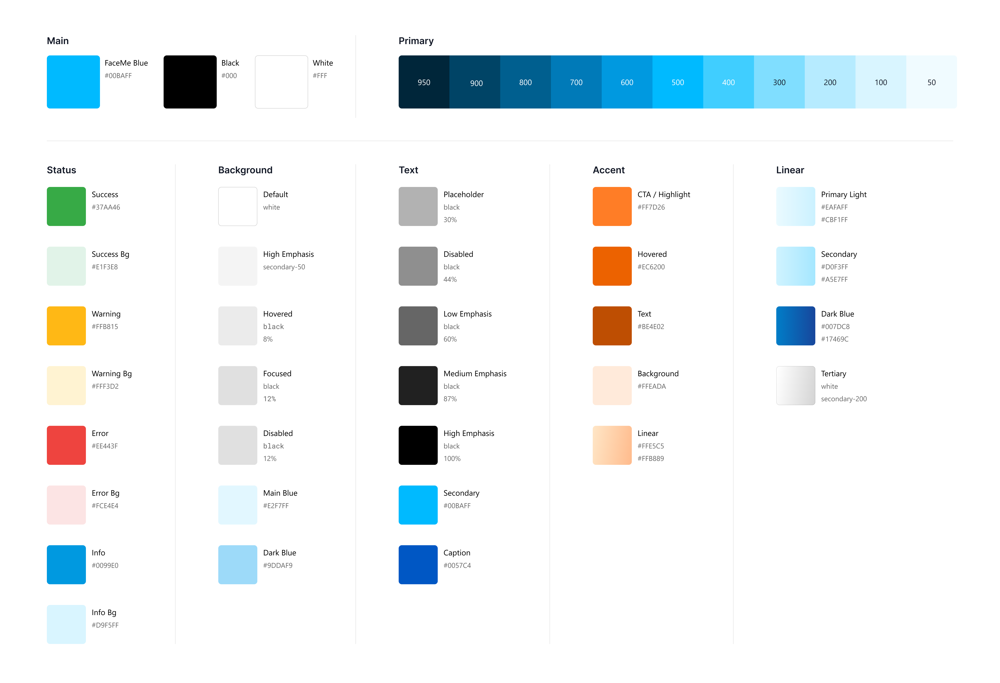
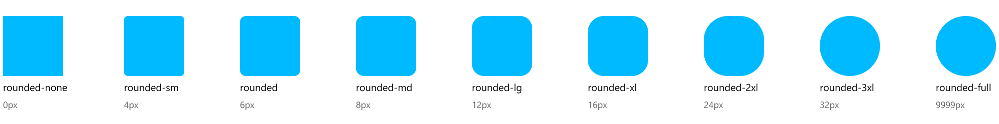
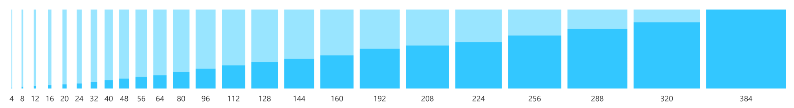
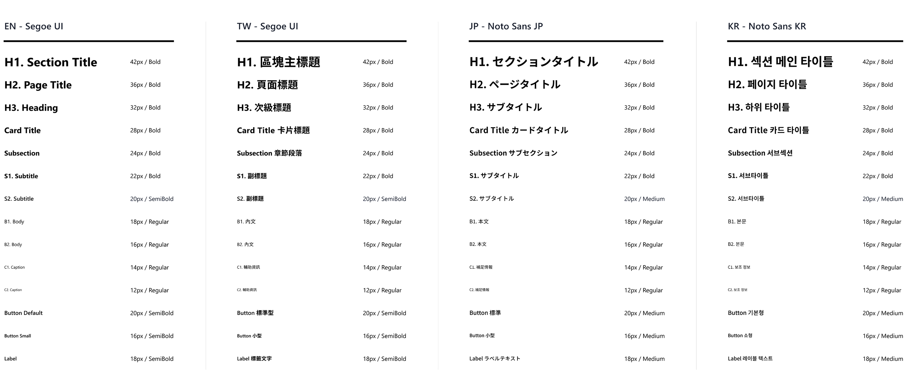
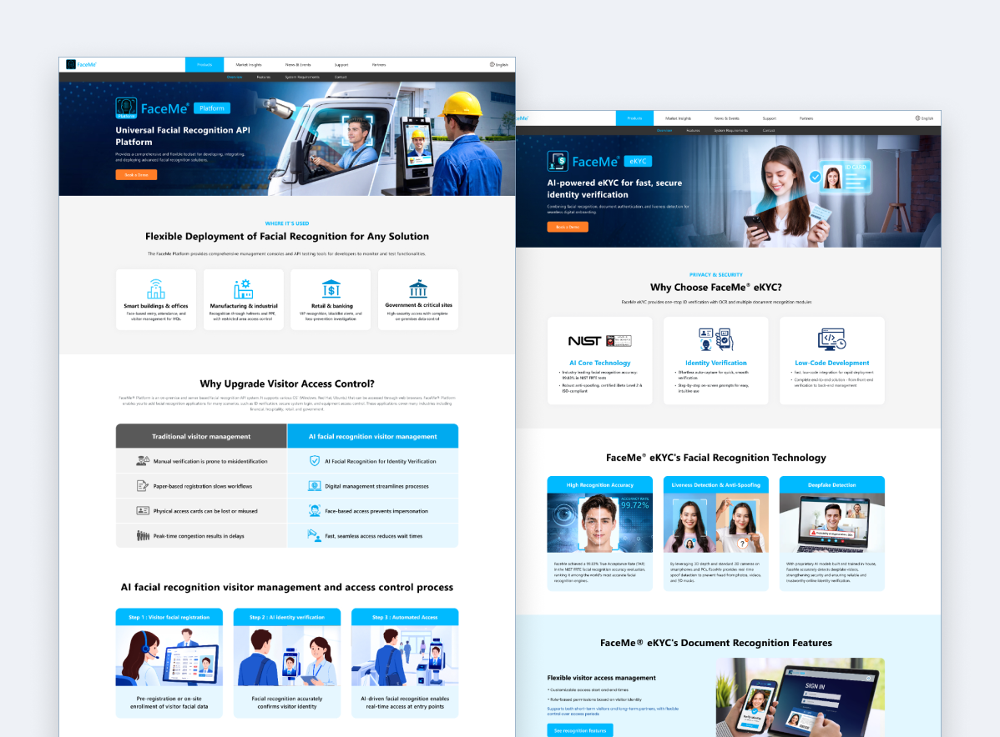
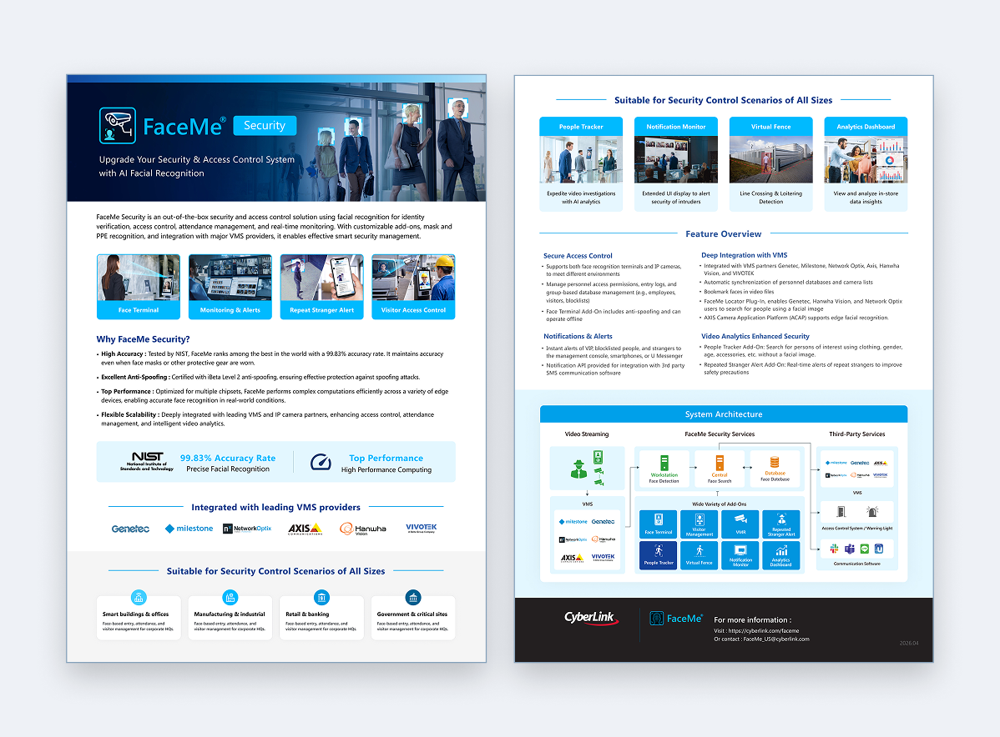

FaceMe – Design System
透過設計系統整合元件、樣式與設計規範，建立統一且可延展的設計語言，靈活應用於不同媒介與情境，延續一致的品牌體驗。

建立可延展的設計系統
隨著產品與頁面持續擴充，既有設計資源逐漸難以支援後續需求。面對緊湊的專案時程，需要在有限時間內逐步整合設計資源，建立一致且易於維護的設計基礎。
視覺一致性
統整色彩、字體與間距，維持視覺一致性。
元件系統化
系統化管理元件，提升使用與維護效率。
狀態明確化
釐清元件狀態與互動，減少反覆確認與調整。
整合品牌識別與 Logo 規範
統整主品牌、產品及相關公司 Logo，集中管理以方便後續取用，並定義不同背景下的使用方式，確保品牌識別在各介面情境中的一致性與辨識度。


定義核心視覺與介面規範
將色彩、圓角、陰影、間距與 Icon 等基礎樣式系統化，確保不同頁面與元件皆遵循一致的視覺原則。
Colors

Border Radius
Common used values are set up in the Variables feature in Figma.

Box Shadow

Spacing

Typography｜跨語系字體規範
針對不同語系的文字結構與閱讀特性，分別配置合適的字體，確保英文、繁體中文、日文與韓文皆具良好的可讀性，並維持跨語系介面的視覺一致性。

Illustration｜插畫風格規範
依據不同內容與使用情境，建立不同層級的人物插畫，從簡易 Icon、功能情境到完整場景，並維持一致的五官特徵與色彩風格，確保整體品牌視覺的一致性。
從共用元件延伸至彈性內容模組
以視覺規範為基礎，將常用介面整理成共用元件，再依不同產品需求組合成可彈性運用的內容模組，同時考量未來深色版本的延伸，讓後續設計更容易擴充與維護。
設計規範到實際應用
依不同需求與內容情境彈性調整版型，延伸應用於網頁、社群圖、宣傳冊與展場印刷品，在保有各載體特色的同時，維持一致的品牌視覺。


從建立規範到提升團隊協作效率
成果
這次專案最終建立並發布了共用的 Figma Library，將散落於不同文件中的元件與設計規範集中管理，並搭配清楚易懂、附有視覺輔助的文件，讓跨團隊、跨地區的協作成員都能快速掌握並遵循一致的設計邏輯，有效降低溝通與維護成本。
學習
這個過程也讓我更確信前期規範的重要性，越早建立一致的元件與設計原則，越能在需求持續增加時避免資源分散與重複調整。透過簡化架構、建立團隊共同語言，設計系統也變得更容易理解、使用與延伸，為後續產品擴充打下更穩定的基礎。